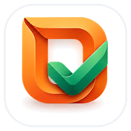
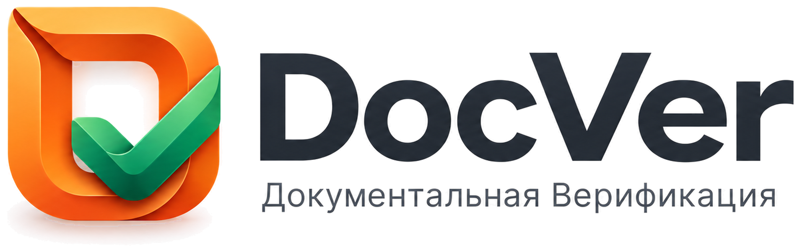
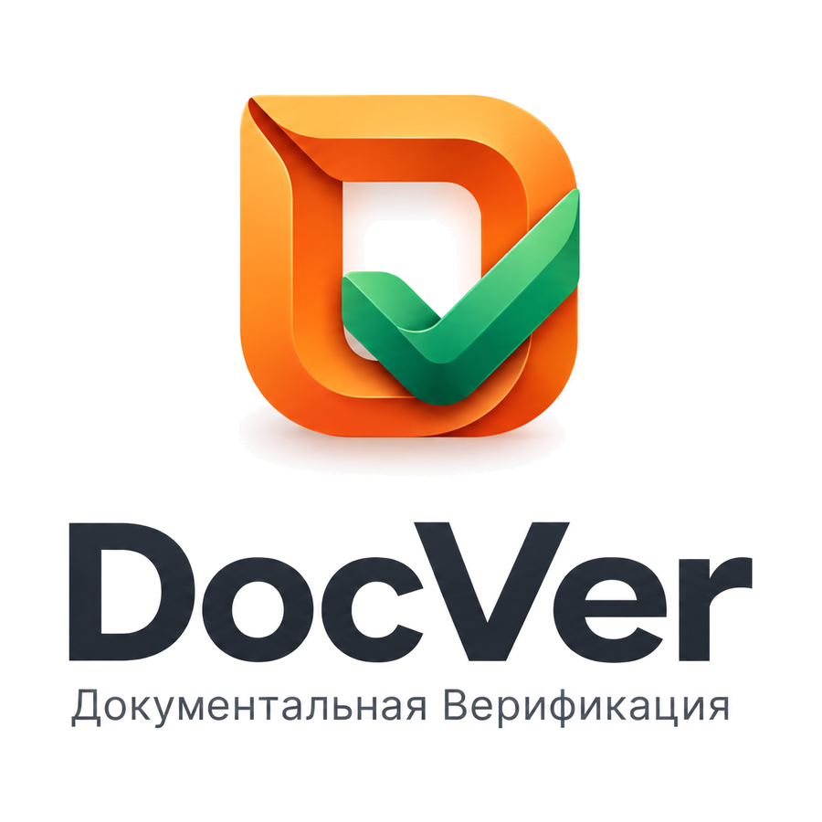
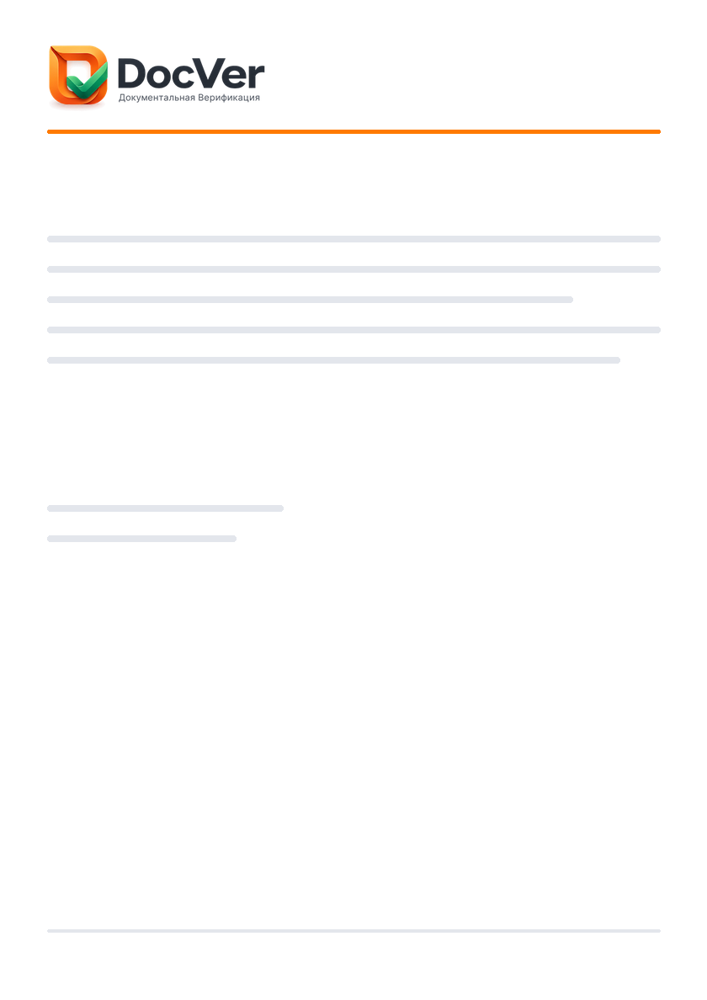

DocVer — фирменный стиль «Документальная Верификация»
Знак: объёмная литера D с изумрудной галочкой верификации · домены docver.ru и chek.ymaster.ru · v1.73.11
Знак и версии логотипа

Знак (прозрачный фон)
Основной знак DocVer с прозрачным фоном — для интерфейсов, фавиконок, бейджей и аватаров.
logo-mark.svg · png/mark-1024…48 · favicon.svg

Иконка приложения (PWA / iOS / Android)
Плитка приложения с объёмным знаком D и галочкой — для экранов «Домой», сторов и масок Adaptive Icon.
icon-3d-master.png (1024) · png/icon3d-512…64

Горизонтальный
Шапка сайта, боковое меню, карточки входа, бланки и документы в строку (1x / 2x / 3x WebP + PNG).
logo-horizontal.svg · png/horizontal-1920.png

Вертикальный
Центральная композиция для обложек, презентаций и витрин.
logo-stacked.svg · png/stacked-900.png
Монохром (печати)
Печати, штампы и ч/б-полиграфия — графитовый контур на светлом.
logo-mono.svg · png/mono-512.png
Монохром белый
Тёмные фоны, футеры и контрастная выворотка.
logo-mono-white.svg · png/mono-white-512.png
Фирменные цвета
#FF7A00оранжевый «Ямастер / DocVer» — литера D и акценты
#16A34Aизумрудный — галочка документальной верификации
#1F2937графит — типографика DocVer и основной знак
#FFFFFFчистый светлый фон карточек и документов
Фирменный бланк А4

Шаблон для писем и актов: шапка с логотипом DocVer и доменом, оранжевая линейка, подвал с реквизитами.
blank-a4.svg · 2100×2970 (A4, 254 dpi)
Правила использования
| Ситуация | Версия |
|---|---|
| Шапка сайта, боковое меню, экраны входа | горизонтальный multi-DPR набор (logo-h / logo-hero 1x, 2x, 3x WebP + PNG) |
| Иконка приложения, PWA, iOS, Android | icon-512 / icon-192 / apple-touch-icon (180×180) / icon-maskable-512 |
| Вкладка браузера и компактные панели | icon-32 / icon-64 / mark-1x…3x с прозрачным фоном |
| Документы, акты, письма | горизонтальный логотип в шапке бланка А4 |
| Печати, штампы, ч/б-печать | logo-mono (графитовый) или logo-mono-white на тёмном фоне |